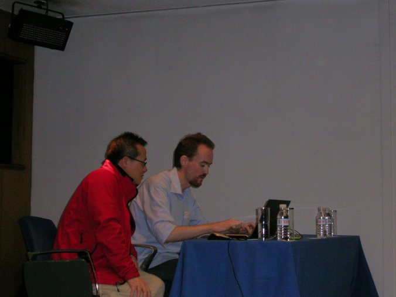
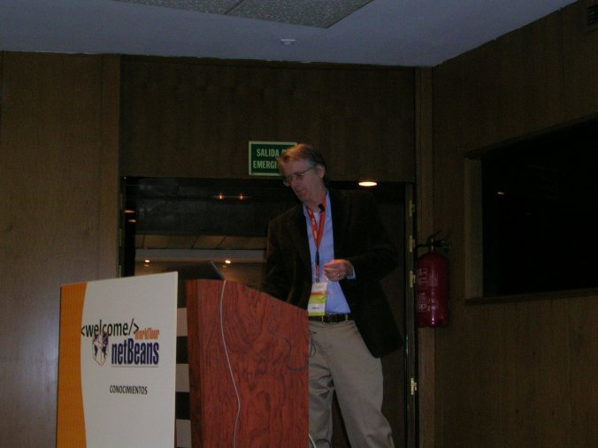
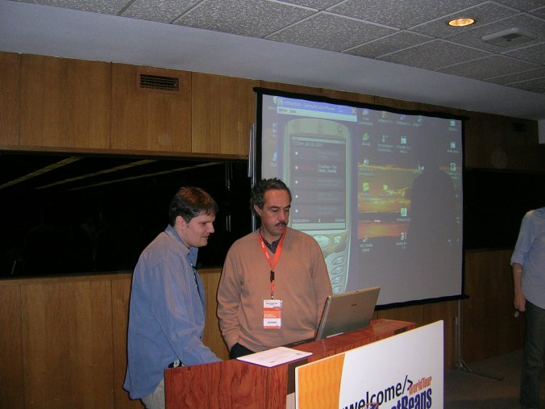
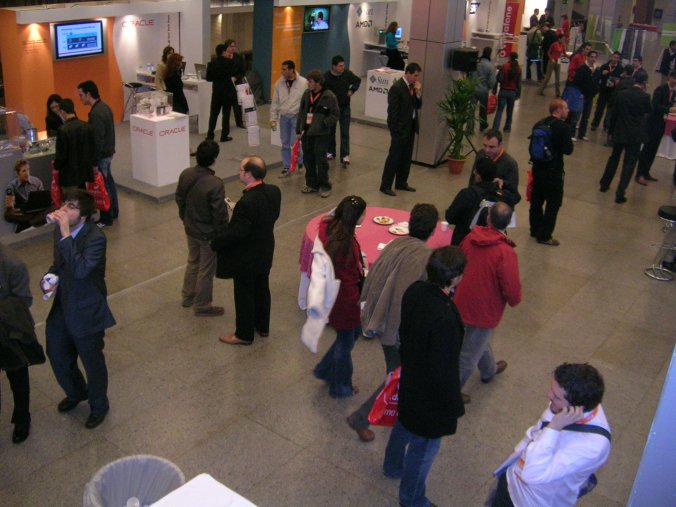
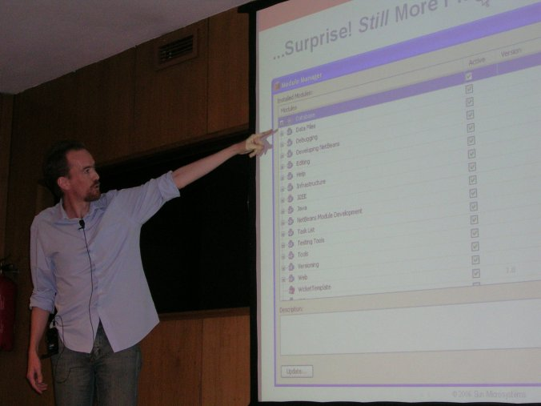
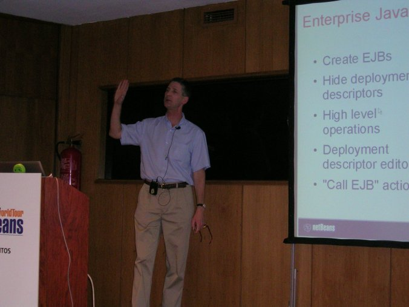
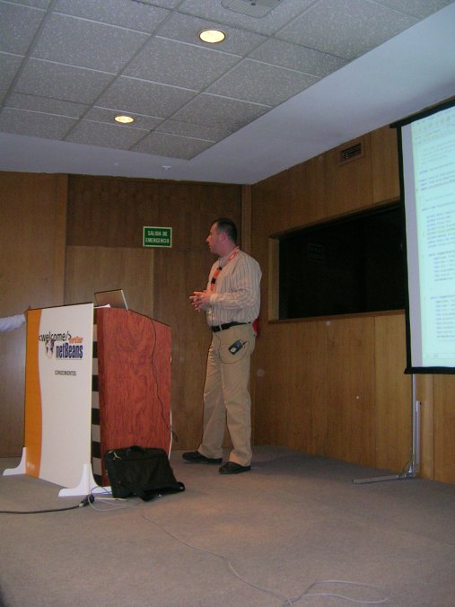
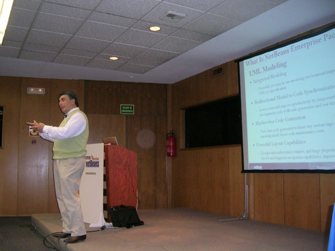
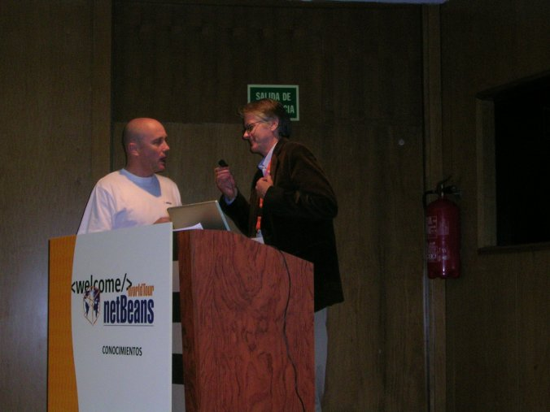
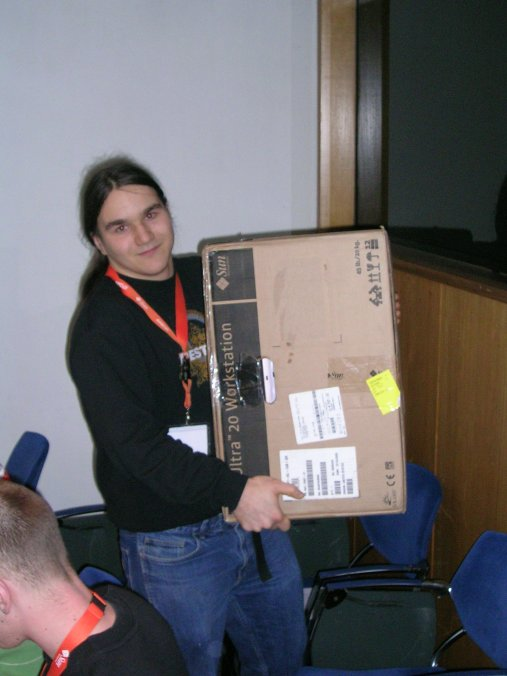

Before the event started, blogger extraordinaire Geertjan Wielenga
interviews JavaPassion founder and all around great guy Sang Shin.

Jeff Jackson makes a point during his opening keynote.

Martin Brehovsky (left) answers an attendee's question about Java Mobility development.

Some of the attendees enjoying refreshments during the morning break

Geertjan Wielenga talks about plug-in modules

Gregg Sporar talks about using the NetBeans IDE to develop EJBs

Octavian Tanase talks about UML support in the NetBeans Enterprise Pack

Straight-shooting Charles Beckham talks about features in the NetBeans Enterprise Pack

Jeff Jackson (right) presents a special award to NetBeans community member Francisco Morero

One lucky attendee won a Sun Ultra20 workstation!